About the game
What secrets does this place hold? Where did it even come from?

Something that was so extraterrestrial... Why did it become like home?

Do I really need to change anything? Am I sure I don't want all this?

Where's the catch? Where is the storm that usually comes after the calm?

Why is this place so perfect?
When?
The game won't be out anytime soon. The idea of the game has been transformed too much relative to the original ideas and ideas, overgrown with a huge history of a whole world. The development is set to start in the coming years.